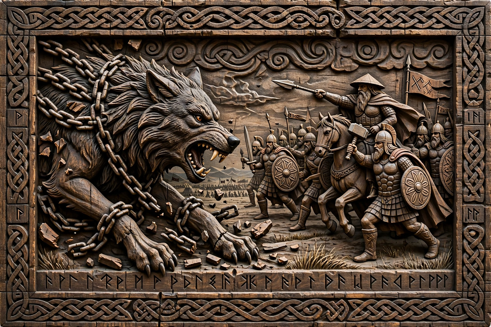

Ragnarök

In Norse mythology, Ragnarök (Old Norse Ragnarǫk, "fate of the gods") is a series of prophesied events, including a great battle, in which many major gods — Odin, Thor, Týr, Freyr, Heimdall and Loki — die, natural disasters consume the world, and the earth sinks beneath the sea before rising again, fertile and renewed, to be repopulated by two human survivors, Líf and Lífþrasir.
Sources
The narrative is preserved chiefly in the Poetic Edda, especially the poem Völuspá, in which a seeress recounts the prophecy to Odin, and in Snorri Sturluson's thirteenth-century Prose Edda, which systematises the account. Scholars debate how far the surviving version reflects pre-Christian belief and how far Christian eschatology influenced it.
The events
Portents include the Fimbulwinter, three winters without summer; the breaking of bonds by the wolf Fenrir; and the world-serpent Jörmungandr rising from the ocean. The dead sail to battle in the ship Naglfar; the fire giant Surtr advances with his flaming sword and sets the world ablaze. Odin is swallowed by Fenrir and avenged by his son Víðarr; Thor slays Jörmungandr but walks nine steps and falls dead from its venom; Loki and Heimdall kill each other. Afterwards the earth emerges green from the sea, the surviving gods return, and Baldr comes back from the dead.
See also: Norse mythology, Loki